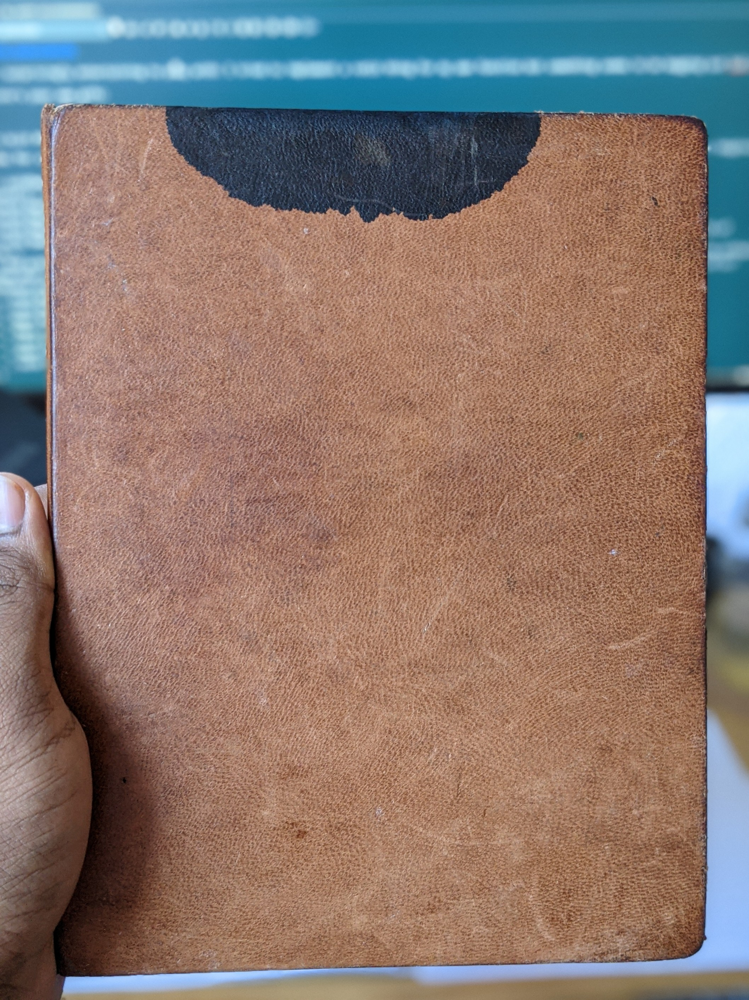

Jared's Binder
Published 2020-10-04

“This is a binder that my partner Celine made for me as a birthday present a couple years back. The black ink splotch its from a mishap with a bottle of fountain pen ink, and all the other little scratches are from me stuffing it into my bag (in which it just barely fits). It’s, in my opinion, a pretty much perfect notebook. Opens flat, can be re-organized, 20-rings so papers are firmly held, lovely to touch, and of course, given to me by someone I love.”
– Jared